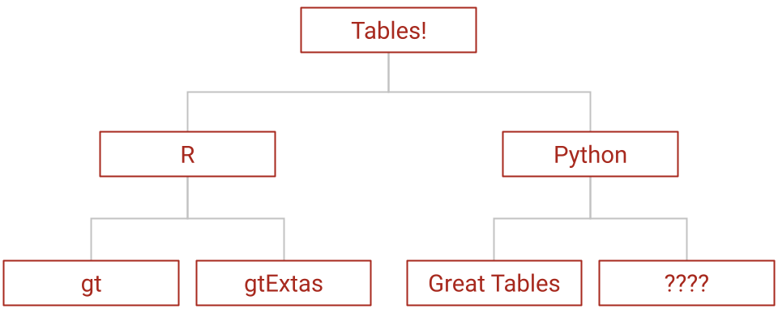
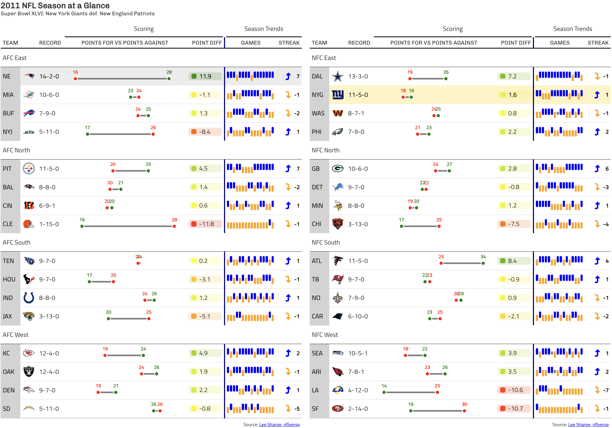

I spent the summer working for Posit (formerly known as RStudio), and I loved it. I was on the tinytools squad, as an intern for Great Tables, the Python port of {gt} in R. My team was responsible for many of the major ports from Posit’s R packages to Python. They are awesome – this is certainly an incomplete list, but they’ve created the Python versions of {ggplot2}, {pointblank}, {scales}, {forcats}, {dplyr}, and {reactable}, to name a few.
What I Did
The technical work at first largely consisted of work on my own package, an addition to the Great Tables ecosystem by way of extension. But I was able to contribute directly to Great Tables as well, which was very satisfying. And then there was the unexpected third avenue of work involving the presentation and promotion of my work to engage with the broader open source community (which was very scary).
I also got to meet tons of folks from the wider Posit community, thanks to internal weekly matchmaking and fun talks/hangouts. I’ve met so many wonderful people over the past few months that I couldn’t possibly list them all here. Suffice to say that from intern hangouts to coffee chats with Posit developers in Europe, to career advice with former python open source team members, to data science talks, the remote world of my internship has not been all too remote.
gt-extras
If you’re here I’ll assume you know about the gt-extras package, or at the very least you know who I am, so I’ll avoid the shameless plug. The overwhelming majority of my work this summer has entailed a port of the {gtExtras} R package to Python, a task that was made more complex and interesting because of the underlying differences between the R and Python versions of Great Tables.

The core tasks of the gt-extras library are to:
- make existing features of Great Tables easier to use
- add in-cell plotting
- compose styles to replicate the themes of famous publications
- make html and post-processing steps simple
Rich Iannone (one of my great mentors) got me started with the package structure, since he had written a version with one of themes. That turned out to be the most bang for my buck – take the exact styling options researched and implemented by Thomas Mock in {gtExtras}, and with minimal syntax changes I had finished the first eight functions!
But it wasn’t all copy and paste. In fact, after that, just about every function had a pretty critical deviation from the R version. The underlying dataframe in the Python package is different from R, and gtExtras had access to ggplot2, but we wanted to keep dependencies light, so I was doing all the data wrangling and graphics myself.
Michael Chow (my other great mentor) pointed me towards Narwhals (a library meant for handling different dataframe libraries). Both he and Rich encouraged me to try out different approaches to plotting, and while they could have easily told me “do it this way,” I am very grateful that I was trusted enough to make those decisions and discoveries myself.
Over the first couple of weeks, I met with both daily, and later we made longer term targets and paired for the more critical decisions. One of which was the first external contribution into my package, which was a delight to see. For the most part, I was given low-level autonomy over implementation choices, and reserved advice for decisions like how to approach building plots or how to unify competing underlying dataframes (looking at you, Narwhals 👀). The control was freeing, as it helped me learn what I could do myself, even when at first it felt like a good thing to ask for help on (like designing the documentation website).
Okay, fine – I can’t help but show off some of the cool things it can do. We can see a summary of the 2011 NFL season, my favorite being the winloss charts, primarily because of how much winning my New York Giants did that season.

Great Tables
The very first PR I made to Great Tables was an entirely new feature, to rotate column labels 90 degrees. I don’t think I realized it at the time, but the workflow of that task was exactly how I approached the functions in gt-extras. Namely, I had to write a function, write a docstring with an example, add it to the documentation, and then write tests. This last part kind of grew on me, even though I’d embarrassingly never really done it before.
It didn’t stop there – as I progressed through styling and coloring functions, I uncovered little improvements I wanted to make to Great Tables. The bonus side effect of spending all those hours extending Great Tables is that I became perhaps the most frequent user (and tester) of the package. So a number of my own GitHub issues (and my subsequent PRs) made their way into the repository:
- a row striping indexing bug with grouped data
- a data coloring palette bug
- an improvement to autocoloring the text of striped rows
- an improvement to autocoloring in semi-transparent elements
Package Promotion
It seems obvious now, but I had never thought about what happens to a package after we write it. It’s a good thing I had Michael and Rich pushing me through this step because, had it been up to me, the world would never have learned about this package. Talking about the package doesn’t come easily to me, especially when it’s to an audience of more than just my roommate, but it really helped that the team gave me the first boost (and it certainly didn’t hurt to have the Posit organization promoting it too).
And selfishly I must admit the effect of broadcasting the package far and wide is rewarding. Seeing the package featured on a blog post, or used in someone’s repository will make my day. Because it’s so cool to know the design choices I stayed awake thinking about were (possibly) appreciated by a fellow data enthusiast.
What I Learned
This summer touched on so many aspects of open source code, from the technical to the collaborative. I learned how to take an idea and turn it into a fully functioning Python package, and I gained hands-on experience with the whole development workflow. Beyond the code itself, I also learned the importance of communicating my work, whether through documentation, blog posts, or presentations.
Package Development
Before this summer, I had no idea what really went into making a Python package from scratch. I learned how to set everything up, from the folder structure, to setup files, to GitHub actions and beyond. I got comfortable with things like versioning, documentation, and publishing to PyPI. Now packaging up code feels way less mysterious and way more doable.
The open process taught me to write code that is readable and maintainable, not just functional. I also gained a deeper appreciation for documentation, not just as a reference, but as a way to welcome new users and contributors.
Development Organization
With a little shame, I must admit I never knew how to use a branch. That’s an exaggeration. I knew what a branch was, and I knew to make one so I didn’t have to commit to the main branch. The shameful part is once I had a branch, all the new code went into that. (🙈 Don’t look at the repository for this website). And then one day, when I felt like there was probably too much code I hadn’t committed to the main branch, I’d merge it and ta-da, surely that was good enough… right? Fortunately, I learned about how to separate code into isolated pieces, to then merge code in a way that keeps the project organized and maintainable.
With even more shame, I have to admit I didn’t know how to write a suite of tests. Again, I knew what tests were supposed to do, but the concept seemed like something meant for more professional environments, never for code that I worked on. Until my work became code that other people could theoretically rely on – then I knew it had to be dependable. So from snapshot tests, to checking for the presence of css and html content, future changes and dependency upgrades can be relied on not to break the package.
I’m not claiming to be a pro, but thanks to Rich and Michael’s mentoring, I am now much better at adhering to these practices than I used to be.
Writing things like this!
Whether it’s a blog post for me (this one!), a blog post for Great Tables or a blog post for the entirety of Posit, I have had no shortage of opportunities to talk about my work. As you might guess, this doesn’t come naturally to me, but it’s yet another skill I’ve gotten to practice and hone in my summer at Posit.
In every instance (yes, even the slides), I’ve presented my musings using Quarto markdown. I promise I’m not getting paid to say this, but having never used Quarto before this summer, I can confidently say I can’t imagine a life without it. Life with Quarto was especially easy when the team that maintains it was part of the organization I worked for :) which I’ll definitely miss. Instead, I guess you’ll find me lurking in GitHub issues.
What’s Next (It’s Not Over Yet)
At the time of publication, I still have a few weeks remaining in my time at Posit. Big things are still planned, from more features in gt-extras, to upgrades for Great Tables. Stick around here or give gt-extras a star and follow along with my work there.